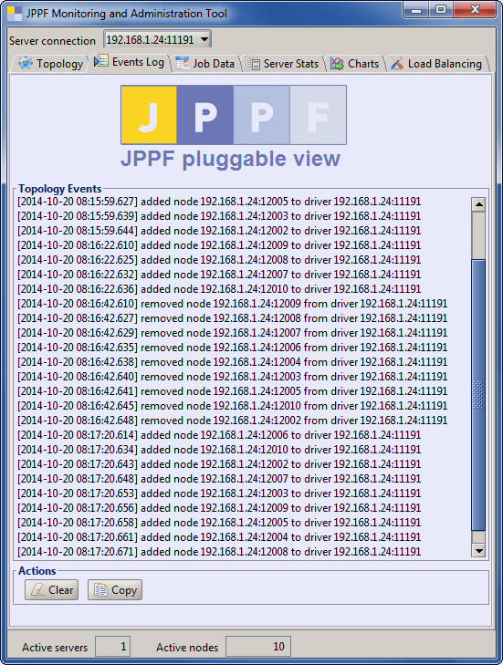

Pluggable View Demo |
What does the sample do?
This sample demonstrates a pluggable view integrated into the JPPF administration and monitoring tool. The view shows a log of events occurring in the JPPF grid topology. Each log entry is timestamped and the view also has two action buttons to clear the log and copy the log to the clipboard.The view looks like this:

How do I run it?
Before running this sample, you need to install a JPPF server, at least one node, and the JPPF amdinistration console.For information on how to set the JPPF components, please refer to the JPPF documentation.
Once you have installed the console, a server and a node, perform the following steps:
- Open a command prompt in JPPF-x.y-samples-pack/PluggableView
- Build the sample's jar file: type "ant jar". This will create a file named PluggableView.jar.
- Copy PluggableView.jar in the "lib" folder of the JPPF amdinistration console, to add it to the console's classpath.
- add the following configuration properties to the admin console's configuration file "JPPF-x.y-admin/config/jppf-gui.properties":
# enable / disable the custom view. defaults to true (enabled) jppf.admin.console.view.MyView.enabled = true # name of a class extending org.jppf.ui.plugin.PluggableView jppf.admin.console.view.MyView.class = org.jppf.example.pluggableview.MyView # the title for the view, seen as the tab label; jppf.admin.console.view.MyView.title = Events Log # path to the icon for the view, seen as the tab icon jppf.admin.console.view.MyView.icon = /test.gif # the built-in view it is attached to; it must be one of the tabbed panes of the console # possible values: Main | Topology | Charts (see section below for their definition) jppf.admin.console.view.MyView.addto = Main # the position at which the custom view is inserted within the enclosing tabbed pane # a negative value means insert at the end; defaults to -1 (insert at the end) jppf.admin.console.view.MyView.position = 1 # whether to automatically select the view; defaults to false jppf.admin.console.view.MyView.autoselect = true
- Start the driver
- Start one or more node(s).
- Start the admin console.
Related source files
MyView.java : this is the implementation of our pluggable view.I have additional questions and comments, where can I go?
There are 2 privileged places you can go to:
- The JPPF Forums
- The JPPF documentation
| Copyright © 2005-2015 JPPF.org |
|
|